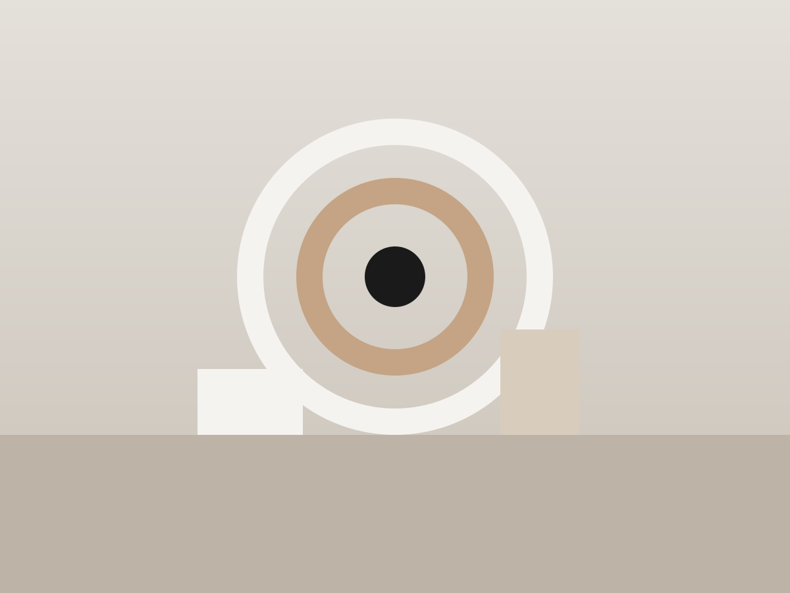

Target Factory

01Контекст
Target Factory — агентство продвижения во ВКонтакте. Сайт — основной источник заявок: потенциальный клиент должен быстро понять, почему стоит доверить продвижение именно этой команде, и выбрать формат сотрудничества.
Задача — обновить лендинг по новому макету, не ломая работающие части страницы.
02Проблема
[Заглушка — уточните своими словами] Блоки с преимуществами и тарифами были перегружены: карточки с фото и иконками отвлекали от сути, сравнить форматы сотрудничества было сложно.
03Гипотеза
Если упростить блоки «Причины доверить продвижение», «Тарифы» и «Почему выбирают нас» — убрать визуальный шум и усилить CTA, — то конверсия посетителя в заявку вырастет на [Z — ваша оценка].
04Что сделал
- Переделал блок «8 причин доверить продвижение нам»: карточки без фото, с номерами 01–08 и кнопкой «Получить консультацию».
- Тарифы: одна карточка на тариф, без декоративных иконок — проще сравнить форматы.
- «Почему выбирают нас»: сетка из 4 колонок с крупным фото по центру и CTA-карточкой.
- Остальные блоки оставил без изменений, чтобы изолировать эффект редизайна. [Добавьте, что отвергли и почему.]
05Результат
Метрики в процессе. Какие метрики я бы ввёл: конверсия в заявку, клики по CTA в каждом блоке, глубина скролла до тарифов. Измерение — сравнение периодов до/после или A/B-тест старой и новой версии.
06Выводы и следующий шаг
[Заглушка] Что сработало, что нет. Следующая гипотеза: [например, проверить влияние кейсов клиентов рядом с тарифами на конверсию].